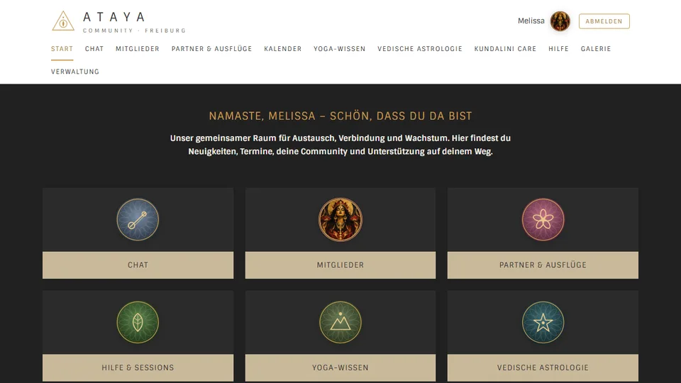

Design & Ästhetik
Ich arbeite gern mit harmonischen Farben, klaren Strukturen und einer ruhigen, modernen Gestaltung. Dabei ist mir wichtig, dass Design nicht überladen wirkt, sondern stimmig und ansprechend.
Kreativität ist für mich ein wichtiger Ausgleich und zugleich eine Stärke, die ich auch in technische Projekte einbringe. Gestaltung, Ästhetik und ein gutes Gespür für Wirkung spielen für mich nicht nur im kreativen Bereich, sondern auch in der Webentwicklung eine große Rolle.
Ich arbeite gern mit harmonischen Farben, klaren Strukturen und einer ruhigen, modernen Gestaltung. Dabei ist mir wichtig, dass Design nicht überladen wirkt, sondern stimmig und ansprechend.
Ich entwickle gerne Konzepte weiter, verfeinere Details und beschäftige mich mit der Frage, wie Inhalte visuell schöner und verständlicher dargestellt werden können.
Besonders spannend finde ich die Verbindung aus Technik und Gestaltung: also digitale Lösungen zu schaffen, die funktional sind und zugleich eine angenehme Benutzererfahrung bieten.

Farben, Schriften und Kacheln der App sind an die Website des ATAYA-Zentrums angelehnt: Anthrazit, Gold und Sand, dazu ruhige, klare Schriften.
Für mich bedeutet Kreativität nicht nur „schön gestalten“, sondern Ideen zu entwickeln, Dinge weiterzudenken und Lösungen auf eine Weise umzusetzen, die individuell, durchdacht und stimmig wirkt.